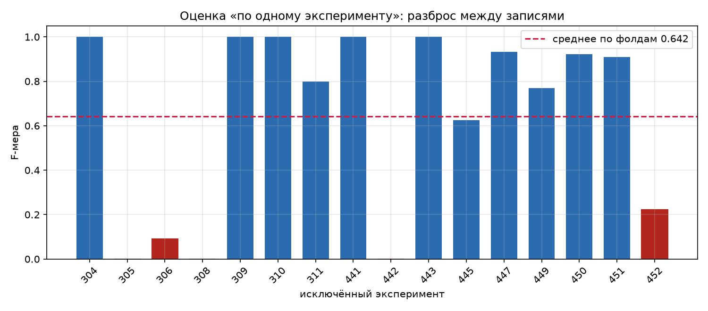

Ликбез по лабораторной №2: бинарная классификация состояния спутника (ADAPT)
Лабораторная №2 · ADAPT · бинарная классификация
Разбор задачи, данных, модели и границ вывода. Основные числа взяты из артефактов проекта: metrics_adapt.json, loeo_adapt.json, summary_baselines.json, improvement_adapt.json, loeo_diagnostics.json, split_info.json.
1. Что это за работа
Задача — бинарная классификация: по окну телеметрии спутника ADAPT определить, находится ли система в норме или в состоянии отказа. Метка одна: fault = 0 (норма) или 1 (отказ). Модель отвечает на вопрос «что происходит сейчас», а не «когда сломается»: это не регрессия и не прогноз остаточного ресурса.
Выбор задачи объясняется типом цели. Регрессия нужна, если цель непрерывна: время до отказа, остаточный ресурс, число циклов. Здесь цель дискретная и размечена по журналу эксперимента. Детекция аномалий (one-class, autoencoder) нужна, если разметки отказов нет. Здесь разметка есть, но её мало: в test 32 окна отказа. Бинарная классификация — разумный первый шаг, но на 16 экспериментах она нестабильна, и это главное ограничение работы.
| Параметр | Значение |
|---|---|
| Тип задачи | бинарная классификация |
| Target | fault (0 — норма, 1 — отказ) |
| Features | 1620 (81 сенсор × 20 шагов) |
| Split | по экспериментам: train 12, test 4 |
| Окон в train / test | 204 / 62 |
| Метрики | accuracy, precision, recall, F1; threshold по validation |
| Главная метрика | F1, но только вместе с precision |
Как строятся окна. Временной ряд эксперимента нарезается на отрезки по 20 шагов с шагом 10. Соседние окна перекрываются на 10 шагов. Метка окна — состояние на последнем шаге. Точка отказа берётся из Experiment_Log (1).xls: всё после неё получает fault = 1, до неё — 0. Переходный процесс отдельно не выделен, поэтому граница между нормой и отказом может быть «грязной». Один эксперимент даёт много окон: и нормальные, и отказовые.
| Параметр окна | Значение |
|---|---|
| Длина | 20 шагов |
| Шаг | 10 шагов |
| Перекрытие | 10 шагов |
| Метка | состояние на последнем шаге |
| Источник метки | Experiment_Log (1).xls |
2. Откуда данные
Источник — ADAPT (NASA). В наборе 16 экспериментов: текстовые файлы .txt с телеметрией и журнал Experiment_Log (1).xls со временем инъекции отказа. Каждый .txt — таблица, где первая колонка задаёт тип записи.
| Тип записи | Что содержит | Роль |
|---|---|---|
ExperimentControl | служебные параметры эксперимента | не признак |
SensorData | строка-заголовок с именами сенсоров | задаёт сенсорные колонки |
AntagonistData | измерения сенсоров по шагам | источник признаков |
UserCommand | команды пользователя | не признак |
AntagonistCommand | команды антагониста | не признак |
FaultInject | время инъекции отказа | только для метки, не признак |
В ТЗ сказано, что используется только SensorData. По фактическим файлам SensorData — это строка-заголовок с именами сенсоров, а числовые измерения лежат в AntagonistData. Парсер src/experiments_adapt.py фильтрует AntagonistData и берёт только сенсорные колонки. Служебные типы записей и FaultInject в признаки не попадают: FaultInject буквально указывает, где начинается отказ, и его использование было бы leakage (утечкой).
Сколько данных. По факту 81 сенсор; в документации ADAPT заявлено 128, но в артефактах проекта это число не подтверждено (TODO: проверить 128 по документации ADAPT). Окно — 20 шагов, шаг 10. Train — 12 экспериментов (204 окна), test — 4 эксперимента (62 окна). Разделение по экспериментам, а не по окнам: соседние окна перекрываются, и случайное разделение по окнам дало бы утечку.
| Часть | Эксперименты | Окон |
|---|---|---|
| Train | 304, 305, 306, 308, 309, 310, 311, 447, 449, 450, 451, 452 | 204 |
| Test | 441, 442, 443, 445 | 62 |
Классы. В train 104 окна нормы и 100 окон отказа; в test 30 и 32. Баланс близок к 50/50, поэтому accuracy содержательна, но её легко завысить постоянным ответом. Метки пересчитаны по data/processed/adapt_train.parquet и adapt_test.parquet; в шести JSON хранятся только суммы confusion matrix, а не отдельные счётчики train.
Постоянные признаки. На train 380 признаков постоянны, на test — 440; на train меняются 1240 признаков. Постоянные признаки не несут информации и не входят в расстояние dist_to_train. Они не удаляются из модели, но и сигнала не добавляют.
Сдвиг данных. Эксперимент 443 отклоняется от train на 3.33σ, эксперимент 445 — на 315.28σ; у 445 двадцать постоянных признаков отклоняются больше чем на 1. Это domain shift: test-эксперименты выходят за пределы обучающего распределения. Сдвиг — ограничение, а не свойство модели.
3. Что было сделано по шагам
3.1. Парсинг
Из каждого .txt берутся строки AntagonistData, из них — только сенсорные колонки. Получается таблица 81 сенсор × число шагов для каждого эксперимента. Имена сенсоров задаёт строка SensorData. Служебные записи, команды и FaultInject отбрасываются.
3.2. Нарезка окон
Ряд нарезается окнами по 20 шагов с шагом 10. Метка окна — состояние на последнем шаге. Точка отказа берётся из журнала: до неё fault = 0, после — 1. Одно окно — один объект; признаки — 81 сенсор × 20 шагов = 1620 значений.
3.3. Split по экспериментам
Используется GroupShuffleSplit по экспериментам: 12 экспериментов в train, 4 в test. Разделение по окнам запрещено: окна внутри эксперимента перекрываются на 10 шагов, и почти каждое test-окно имело бы «соседа» в train. Это была бы leakage через перекрытие. Пересечение списков экспериментов пустое.
| Часть | Эксперименты | Окон |
|---|---|---|
| Train | 304, 305, 306, 308, 309, 310, 311, 447, 449, 450, 451, 452 | 204 |
| Test | 441, 442, 443, 445 | 62 |
3.4. Нормализация
Среднее и разброс считаются только по train. Test не участвует в нормализации. Это важно: иначе статистика test попала бы в обучение и метрика стала бы оптимистичной.
3.5. Модель
MLP: вход 1620 → Dense(128) → BatchNorm → Dropout(0.3) → Dense(64) → BatchNorm → Dropout(0.3) → Dense(32) → BatchNorm → Dropout(0.3) → Dense(1, sigmoid). L2-регуляризация 1e-4, Adam, скорость обучения 1e-3, early stopping по val_loss, batch 32–64. У сети 218 305 параметров.
3.6. Улучшения
Относительно базовой модели A проверены десять наборов B–K. Выбор — по F1 на validation при threshold, подобранном по validation; test в выборе не участвует. Победитель — D_ёмкость (слои 128–64–32), прирост F1 на test +0.127.
| Набор | Что меняет | F1 на validation | F1 на test | Δ F1 на test |
|---|---|---|---|---|
| A_базовая | исходная модель | 0.829 | 0.769 | 0.000 |
| B_веса_классов | повышенный вес редкого класса | 0.849 | 0.836 | +0.067 |
| C_нормализация | BatchNorm, Dropout 0.3, L2 | 0.860 | 0.815 | +0.046 |
| D_ёмкость | слои 128–64–32 | 0.868 | 0.897 | +0.127 |
| E_ёмкость_веса | 128–64–32 и веса классов | 0.849 | 0.889 | +0.120 |
| F_аугментация | шум и масштабирование окон | 0.686 | 0.578 | −0.191 |
| G_признаки | средние, разброс, экстремумы, разности | 0.758 | 0.784 | +0.015 |
| H_шаг_5 | вдвое больше обучающих окон | 0.781 | 0.793 | +0.023 |
| I_смещения | окна со смещением ±2 шага | 0.837 | 0.793 | +0.023 |
| J_комбинация | ёмкость, веса, признаки, аугментация, шаг 5 | 0.782 | 0.720 | −0.049 |
| K_шаг_5_базовая | базовая сеть на шаге 5 | 0.827 | 0.694 | −0.075 |
3.7. Threshold
Threshold выбран по validation как точка максимума F1; test не использовался. Итоговое значение — 0.395216. Это не «оптимальный порог вообще», а порог, найденный на конкретной validation-выборке внутри train.
3.8. Оценка
Оценка идёт на трёх уровнях. Test — 4 эксперимента, 62 окна. CV — 5 фолдов по train. LOEO (leave-one-experiment-out) — 16 фолдов: обучение на 15 экспериментах, проверка на одном. LOEO измеряет разброс между экспериментами, а не качество финальной модели на новых данных.
| Оценка | Что измеряет | F1 |
|---|---|---|
| Test | 4 эксперимента, 62 окна | 0.897 |
| CV | 5 фолдов по train | 0.794 ± 0.179 |
| LOEO, threshold подобран внутри фолда | 16 фолдов | 0.642 ± 0.406 |
| LOEO, threshold 0.5 | 16 фолдов | 0.752 ± 0.329 |
| LOEO, объединённо, threshold 0.5 | 266 окон | 0.748 |
Фолды CV дают F1 1.000, 0.963, 0.833, 0.571 и 0.600. Разброс внутри train уже заметен, но на test он проявляется сильнее.
3.9. Диагностика
Проверялась связь F1 фолда с характеристиками эксперимента: долей отказов, положением первого отказа, средним разбросом сенсоров и расстоянием dist_to_train. dist_to_train — корень из среднего квадрата z-отклонения по признакам, которые меняются на train; отдельные z-отклонения ограничены 10σ, чтобы один почти постоянный признак не перекрыл остальные.
По 16 фолдам максимальная |Spearman ρ| = 0.350 (p = 0.183) для dist_to_train; остальные |ρ| ≤ 0.114, все p > 0.05. На 12 обучающих фолдах ρ = −0.713 (p = 0.009), но это подвыборка без поправки на множественные сравнения, поэтому результат не считается доказательством. Permutation test и permutation importance в артефактах не сохранены (TODO: проверить permutation test и permutation importance).
4. Модели и базовые предсказатели
| Модель | Что это |
|---|---|
| MLP | 128 → 64 → 32 → 1, BatchNorm, Dropout 0.3, L2 1e-4 |
| logreg | логистическая регрессия на тех же 1620 признаках |
| constant-«норма» | всегда 0 |
| constant-«отказ» | всегда 1 |
Baseline (базовая планка) нужен, чтобы отделить вклад модели от вклада самих данных. F1 без precision обманчива: постоянный ответ «отказ» даёт F1 0.681, но precision 0.516 — половина тревог ложная, а классы не различаются.
| Модель | accuracy | precision | recall | F1 |
|---|---|---|---|---|
| Constant-«норма» | 0.484 | 0.000 | 0.000 | 0.000 |
| Constant-«отказ» | 0.516 | 0.516 | 1.000 | 0.681 |
| LogReg | 0.726 | 1.000 | 0.469 | 0.638 |
| MLP до улучшений | 0.806 | 1.000 | 0.625 | 0.769 |
| MLP (итоговая) | 0.903 | 1.000 | 0.812 | 0.897 |
Ловушка constant-«отказ». Recall 1.000 выглядит идеально, но precision 0.516 означает 30 ложных тревог на 30 окон нормы. Для раннего предупреждения ложная тревога дорога: оператор перестаёт доверять сигналу. F1 0.681 высок только потому, что классы сбалансированы (30/32 в test). На несбалансированных данных такой baseline выглядел бы иначе.
LogReg против MLP. Precision у обеих 1.000, но recall растёт с 0.469 до 0.812. MLP находит отказы, которые линейная граница пропускает: сигнал нелинейный. При этом precision 1.000 на 30 окнах нормы — свойство малого test, а не гарантия. Реалистичная оценка precision по LOEO при threshold 0.5 — 0.756 ± 0.333.
5. Что получилось
| Метрика | Значение |
|---|---|
| accuracy | 0.903 |
| precision | 1.000 |
| recall | 0.812 |
| F1 | 0.897 |
| ROC-AUC | 0.926 |
| threshold | 0.395216 |
| Объектов в test | 62 |
Confusion matrix на test:
| Предсказано «норма» | Предсказано «отказ» | |
|---|---|---|
| Истинная «норма» | TN = 30 | FP = 0 |
| Истинный «отказ» | FN = 6 | TP = 26 |
По экспериментам. Три из четырёх test-экспериментов разделяются идеально; один даёт F1 0.400.
| Эксперимент | Окон | accuracy | precision | recall | F1 | ROC-AUC |
|---|---|---|---|---|---|---|
| 441 | 17 | 1.000 | 1.000 | 1.000 | 1.000 | 1.000 |
| 442 | 15 | 0.600 | 1.000 | 0.250 | 0.400 | 0.661 |
| 443 | 15 | 1.000 | 1.000 | 1.000 | 1.000 | 1.000 |
| 445 | 15 | 1.000 | 1.000 | 1.000 | 1.000 | 1.000 |
Шесть честных выводов.
- Test F1 0.897 — верхняя граница на удачном test из 4 экспериментов. Робастная оценка — LOEO 0.752 ± 0.329 при threshold 0.5; при подобранном threshold — 0.642 ± 0.406.
- Разброс по 16 фолдам бимодальный: 5 фолдов дают F1 1.000, 5 — ниже 0.5 (при подобранном threshold). Это не «шум вокруг среднего», а два типа экспериментов.
- Precision 1.000 — следствие 30 окон нормы. LOEO при threshold 0.5 даёт precision 0.756 ± 0.333; это реалистичнее.
- Десять наборов улучшений не устранили разброс. Причина не в архитектуре, а в данных: 16 экспериментов, разнородность, разреженность отказов.
- Threshold по одному эксперименту хрупок: в фолде 306 подобранный threshold даёт F1 0.091 там, где 0.5 даёт 1.000; в фолде 442 — 0.000 против 0.615. Поэтому сводка при 0.5 устойчивее.
- Характеристики экспериментов не объясняют разброс: максимальная |ρ| = 0.350, p = 0.183, все p > 0.05. Причина — нехватка данных, а не найденная закономерность.
Ограничения.
| Ограничение | Что ломается | Разрешимо |
|---|---|---|
| Test 62 окна, 4 эксперимента | одно окно — 1.6 п.п. F1 | нет, данных мало |
| LOEO — диагностика процедуры, не оценка модели | в фолдах эксперимент X в train, Y в test | нет, это свойство LOEO |
| Precision 1.000 на 30 окнах нормы | не устойчивое свойство | нет, малый test |
| Перекрытие окон (20/10) | эффективное n примерно вдвое меньше | нет, это выбор нарезки |
| Переходный процесс не выделен | граница нормы и отказа «грязная» | нет, длительностей перехода в журнале нет |
| Разброс не объясняется характеристиками | причина — данные, не признаки | частично, больше экспериментов |

6. Спорные моменты
(а) Разрыв CV и test (0.794 против 0.897) — это подгонка?
Нет. Split по экспериментам зафиксирован до обучения. Улучшения и threshold отбирались по validation внутри train; test открывался однократно. 0.897 — верхняя граница на удачном test из четырёх экспериментов: 441, 443 и 445 дали F1 1.000, 442 — 0.400. Робастная оценка — LOEO 0.752 ± 0.329 при threshold 0.5. CV 0.794 ± 0.179 ниже test именно потому, что test оказался «лёгким», а не потому, что модель подгонялась.
(б) LOEO при подобранном threshold хуже, чем при 0.5 (0.642 против 0.752) — почему?
Threshold, подобранный по одному контрольному эксперименту (около 17 окон), имеет огромную дисперсию. В фолде 306 он превратил идеальное разделение в F1 0.091, в фолде 442 — в 0.000; при 0.5 те же фолды дают 1.000 и 0.615. Пять фолдов ниже 0.5 при подобранном threshold против трёх при 0.5; полных попаданий — 5 против 7. Threshold 0.5 — робастная константа, устойчивее оптимума на малой выборке.
(в) Constant-«отказ» даёт F1 0.681 — почему итоговая модель лучше?
У constant-«отказ» precision 0.516 и recall 1.000: 30 ложных тревог на 30 окон нормы, классы не различаются. У итоговой модели precision 1.000 и recall 0.812. Для раннего предупреждения ложные тревоги дороги. F1 constant высок только из-за баланса 30/32; на других пропорциях он был бы ниже.
(г) Precision 1.000 — это не leakage?
Нет. На test из 32 отказов не встретилось пограничных окон, поэтому ложных тревог не было. Split — по экспериментам, threshold — по validation, test не участвовал. Precision 1.000 — свойство конкретных 30 окон нормы, а не гарантия. LOEO при threshold 0.5 даёт precision 0.756 ± 0.333 — реалистичная оценка.
(д) Почему не детекция аномалий (autoencoder)?
Разметка есть: 32 отказа на test и около 100 окон отказа в train, но этого мало. Детекция аномалий (one-class, autoencoder) могла бы быть лучше при редких отказах — это следующая лаба (№5), а не замена. В лабораторной №2 бинарная классификация — разумный первый шаг, но с оговоркой про нестабильность.
(е) Почему не переобучить на 10 экспериментах, а test сделать из 6?
Меньше train, больше test: модель хуже, потому что признаков больше, чем объектов (p >> n), и оценка становится ещё шумнее. Менять split после обучения — подгонка. Вместо этого используется LOEO на 16 фолдах: он показывает разброс между экспериментами и не требует нового разбиения.
7. Что спросить у преподавателя
- Про честность вывода. Test F1 0.897, LOEO 0.752 ± 0.329, разброс 0.000–1.000. Это ожидаемое поведение для 16 экспериментов или работу стоит продолжать в сторону стабильности (ансамбль, нормализация внутри эксперимента)?
- Про объём данных. 16 экспериментов, 62 окна в test. Достаточно ли этого для вывода «модель работает» или нужна другая постановка (детекция аномалий, событие вместо окна)?
- Про constant-«отказ». F1 0.681 при precision 0.516. Корректно ли всегда приводить precision рядом с F1 или есть постановки, где precision не важен?
- Про threshold. Подобранный threshold 0.395 даёт 0.897 на test, но хуже на LOEO (0.642 против 0.752 при 0.5). Стоит ли делать основной сводкой threshold 0.5, а подобранный — дополнительной?
- Про разброс. Характеристики экспериментов не объясняют разброс (|ρ| ≤ 0.350, p > 0.05). Правильно ли утверждение «причина — данные, а не модель» или оно слишком сильное?
- Про улучшения. Десять наборов не устранили разброс. Что пробовать: ансамбль по фолдам, нормализацию внутри эксперимента, калибровку threshold по эксперименту или переформулировку задачи?
8. Термины
Метрики. accuracy (доля верных) — сколько объектов классифицировано правильно; не различает FP и FN. precision (точность по отказам) — когда модель сказала «отказ», сколько раз это правда; наказывает ложные тревоги. recall (полнота) — сколько настоящих отказов найдено; наказывает пропуски. F1 (F-мера) — гармоническое среднее precision и recall; без precision и recall обманчива: constant-«отказ» даёт F1 0.681 при precision 0.516. confusion matrix — таблица TN, FP, FN, TP. ROC-AUC — площадь под ROC-кривой; вероятность, что случайный отказ получит больший score, чем случайная норма.
Модель. MLP — многослойный перцептрон, полносвязная нейросеть. Dense — полносвязный слой. BatchNorm — нормализация активаций слоя, стабилизирует обучение. Dropout — случайное отключение нейронов, регуляризация. ReLU — активация max(0, x), добавляет нелинейность. sigmoid — выход от 0 до 1, интерпретируется как вероятность отказа. Adam — адаптивный оптимизатор градиента. L2 — штраф за большие веса, регуляризация 1e-4. EarlyStopping — остановка, когда val_loss перестаёт улучшаться.
Проверка. split — разделение на train и test. GroupShuffleSplit — разделение по группам (экспериментам), а не по окнам; иначе перекрытие окон даёт leakage. LOEO (leave-one-experiment-out) — 16 фолдов: обучение на 15 экспериментах, проверка на одном; это диагностика процедуры, а не оценка финальной модели. CV (cross-validation) — 5 фолдов по train. threshold — порог решения; выбирается по validation, не по test; на малой выборке хрупок.
Планки и риски. baseline — простая базовая модель для сравнения. constant baselines — постоянные ответы «норма» и «отказ». leakage — утечка информации из test или будущего в признаки. shortcut — признак, позволяющий модели «подсмотреть» ответ, не выучив закономерность. domain shift — сдвиг распределения test относительно train; здесь до 315.28σ.
Статистика. permutation importance — падение F1 при случайной перестановке значения признака; в артефактах Lab2 не сохранён (TODO: проверить permutation importance). permutation test — p-value через многократное перемешивание меток; в артефактах Lab2 не сохранён (TODO: проверить permutation test). Spearman ρ — ранговая корреляция, монотонная связь, устойчива к выбросам; максимальная |ρ| = 0.350. σ — стандартное отклонение; используется и в оценке разброса, и в мере domain shift. p-value — вероятность увидеть результат не слабее наблюдённого при верной нулевой гипотезе; p > 0.05 не даёт оснований считать связь значимой. CI — доверительный интервал; в артефактах Lab2 отдельный CI не сохранён, используется среднее ± стандартное отклонение (TODO: проверить CI).
9. Как объяснить процесс
Работа начинается с данных ADAPT: 16 экспериментов, в каждом — телеметрия 81 сенсора и журнал с временем инъекции отказа. Файлы .txt содержат разные типы записей, но для модели важны только сенсорные измерения; время отказа нужно лишь для разметки. Служебные записи и FaultInject в признаки не попадают, иначе модель увидела бы ответ заранее.
Ряд каждого эксперимента нарезается на окна по 20 шагов с шагом 10. Окно — это 1620 чисел: 81 сенсор, по 20 моментов на каждый. Метка ставится по последнему шагу окна: если отказ уже начался, окно относится к классу «отказ». Переходный процесс отдельно не выделяется, поэтому граница между нормой и отказом может быть нечёткой.
Разделение идёт по экспериментам: 12 экспериментов в train, 4 в test. Разделять по окнам нельзя, потому что соседние окна перекрываются и почти каждое test-окно имело бы родственника в train. Это была бы утечка, и метрика стала бы оптимистичной.
Модель — небольшая полносвязная сеть: 128, 64 и 32 нейрона, BatchNorm, Dropout и L2-регуляризация. Threshold выбирается по validation внутри train, а не по test. Test открывается один раз, после того как всё зафиксировано.
На test модель даёт accuracy 0.903, precision 1.000, recall 0.812 и F1 0.897. Но это верхняя граница на удачном наборе из четырёх экспериментов. Честнее смотреть на LOEO: при threshold 0.5 среднее F1 0.752 ± 0.329, при подобранном threshold — 0.642 ± 0.406. Разброс бимодальный: часть экспериментов разделяется идеально, часть — плохо.
Постоянный ответ «отказ» даёт F1 0.681, но precision 0.516: половина тревог ложная. Это показывает, почему F1 нельзя читать без precision. Threshold, подобранный по одному эксперименту, тоже ненадёжен: в двух фолдах он превратил хорошее разделение в почти нулевое, тогда как фиксированный 0.5 работал устойчивее.
Главный открытый вопрос — причина разброса. Характеристики экспериментов его не объясняют: максимальная корреляция 0.350, все p > 0.05. Десять наборов улучшений тоже не устранили разброс. Вывод работы осторожный: модель работает на отдельных экспериментах, но устойчивого качества на 16 экспериментах не демонстрирует; причина скорее в объёме и разнородности данных, чем в найденной закономерности.